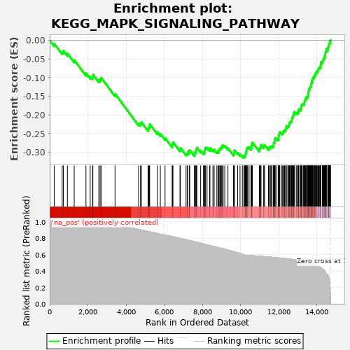
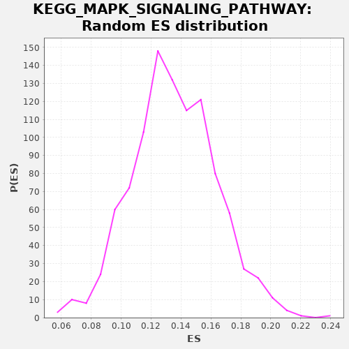

| | | Dataset | drug_embeddings_gsea |
| Phenotype | NoPhenotypeAvailable |
| Upregulated in class | na_neg |
| GeneSet | KEGG_MAPK_SIGNALING_PATHWAY |
| Enrichment Score (ES) | -0.31492287 |
| Normalized Enrichment Score (NES) | NaN |
| Nominal p-value | NaN |
| FDR q-value | 1.0 |
| FWER p-Value | 0.0 |
Table: GSEA Results Summary

Fig 1: Enrichment plot: KEGG_MAPK_SIGNALING_PATHWAY
Profile of the Running ES Score & Positions of GeneSet Members on the Rank Ordered List
| PROBE | GENE SYMBOL | GENE_TITLE | RANK IN GENE LIST | RANK METRIC SCORE | RUNNING ES | CORE ENRICHMENT | | 1 | PLA2G5 | | | 236 | 1.000 | -0.0092 | No |
| 2 | FGF14 | | | 654 | 1.000 | -0.0310 | No |
| 3 | PLA2G6 | | | 714 | 1.000 | -0.0279 | No |
| 4 | CACNA1S | | | 927 | 1.000 | -0.0355 | No |
| 5 | CHP2 | | | 1283 | 1.000 | -0.0530 | No |
| 6 | PLA2G1B | | | 1899 | 1.000 | -0.0884 | No |
| 7 | CACNG1 | | | 2121 | 1.000 | -0.0966 | No |
| 8 | CACNA1I | | | 2247 | 1.000 | -0.0981 | No |
| 9 | PLA2G12B | | | 2261 | 1.000 | -0.0919 | No |
| 10 | CACNG4 | | | 2572 | 1.000 | -0.1063 | No |
| 11 | IL1R2 | | | 2640 | 1.000 | -0.1038 | No |
| 12 | PLA2G10 | | | 2691 | 1.000 | -0.1001 | No |
| 13 | CACNB2 | | | 3420 | 1.000 | -0.1434 | No |
| 14 | RASGRF2 | | | 4655 | 0.908 | -0.2223 | No |
| 15 | CACNB1 | | | 4755 | 0.902 | -0.2228 | No |
| 16 | CACNA1F | | | 4801 | 0.900 | -0.2195 | No |
| 17 | IL1A | | | 5149 | 0.883 | -0.2372 | No |
| 18 | RASGRP1 | | | 5188 | 0.881 | -0.2336 | No |
| 19 | RASGRP3 | | | 5220 | 0.879 | -0.2295 | No |
| 20 | CACNA2D1 | | | 5236 | 0.878 | -0.2243 | No |
| 21 | PRKX | | | 5633 | 0.858 | -0.2456 | No |
| 22 | FGF12 | | | 5794 | 0.849 | -0.2506 | No |
| 23 | FGF13 | | | 6042 | 0.838 | -0.2617 | No |
| 24 | FGF21 | | | 6413 | 0.820 | -0.2815 | No |
| 25 | CACNA1B | | | 6429 | 0.819 | -0.2767 | No |
| 26 | DUSP5 | | | 6456 | 0.818 | -0.2727 | No |
| 27 | GNG12 | | | 6822 | 0.799 | -0.2923 | No |
| 28 | TAOK3 | | | 6846 | 0.798 | -0.2882 | No |
| 29 | PLA2G2A | | | 7142 | 0.782 | -0.3031 | No |
| 30 | DUSP10 | | | 7217 | 0.778 | -0.3027 | No |
| 31 | RRAS2 | | | 7229 | 0.777 | -0.2979 | No |
| 32 | CACNB3 | | | 7325 | 0.772 | -0.2990 | No |
| 33 | PLA2G4E | | | 7326 | 0.772 | -0.2935 | No |
| 34 | MAP4K3 | | | 7577 | 0.758 | -0.3054 | No |
| 35 | NTF3 | | | 7591 | 0.757 | -0.3009 | No |
| 36 | DUSP2 | | | 7633 | 0.756 | -0.2984 | No |
| 37 | PLA2G3 | | | 7662 | 0.754 | -0.2950 | No |
| 38 | CACNA2D2 | | | 7674 | 0.753 | -0.2904 | No |
| 39 | PTPN5 | | | 7707 | 0.751 | -0.2873 | No |
| 40 | MRAS | | | 7905 | 0.741 | -0.2956 | No |
| 41 | DUSP4 | | | 8052 | 0.731 | -0.3005 | No |
| 42 | MAP3K13 | | | 8099 | 0.728 | -0.2985 | No |
| 43 | ECSIT | | | 8116 | 0.727 | -0.2945 | No |
| 44 | RASGRF1 | | | 8129 | 0.726 | -0.2901 | No |
| 45 | PRKACB | | | 8162 | 0.724 | -0.2872 | No |
| 46 | DUSP7 | | | 8240 | 0.719 | -0.2874 | No |
| 47 | RASGRP2 | | | 8377 | 0.712 | -0.2918 | No |
| 48 | MOS | | | 8392 | 0.711 | -0.2877 | No |
| 49 | PLA2G4B | | | 8547 | 0.702 | -0.2934 | No |
| 50 | NGF | | | 8612 | 0.699 | -0.2928 | No |
| 51 | CD14 | | | 8754 | 0.691 | -0.2977 | No |
| 52 | DUSP8 | | | 8822 | 0.686 | -0.2974 | No |
| 53 | DUSP9 | | | 8862 | 0.684 | -0.2953 | No |
| 54 | RAC3 | | | 8873 | 0.683 | -0.2911 | No |
| 55 | GADD45G | | | 8927 | 0.681 | -0.2899 | No |
| 56 | MAP3K6 | | | 8955 | 0.679 | -0.2870 | No |
| 57 | IL1R1 | | | 9013 | 0.676 | -0.2861 | No |
| 58 | TAOK2 | | | 9021 | 0.675 | -0.2818 | No |
| 59 | NTF4 | | | 9085 | 0.671 | -0.2814 | No |
| 60 | DUSP14 | | | 9167 | 0.666 | -0.2822 | No |
| 61 | RAC2 | | | 9334 | 0.656 | -0.2891 | No |
| 62 | FGF7 | | | 9621 | 0.638 | -0.3043 | No |
| 63 | FGFR4 | | | 9655 | 0.636 | -0.3021 | No |
| 64 | CACNG2 | | | 9664 | 0.635 | -0.2981 | No |
| 65 | FGF10 | | | 9668 | 0.635 | -0.2938 | No |
| 66 | SOS2 | | | 9840 | 0.622 | -0.3012 | No |
| 67 | CACNA1C | | | 9967 | 0.613 | -0.3056 | No |
| 68 | FGF3 | | | 10089 | 0.603 | -0.3097 | No |
| 69 | MAP3K12 | | | 10166 | 0.597 | -0.3107 | Yes |
| 70 | RELB | | | 10205 | 0.595 | -0.3091 | Yes |
| 71 | STK4 | | | 10243 | 0.593 | -0.3074 | Yes |
| 72 | RASGRP4 | | | 10251 | 0.592 | -0.3037 | Yes |
| 73 | CACNA1G | | | 10270 | 0.592 | -0.3007 | Yes |
| 74 | NF1 | | | 10285 | 0.592 | -0.2975 | Yes |
| 75 | NFATC4 | | | 10304 | 0.591 | -0.2945 | Yes |
| 76 | MAP4K1 | | | 10309 | 0.591 | -0.2906 | Yes |
| 77 | CACNG3 | | | 10335 | 0.591 | -0.2881 | Yes |
| 78 | CACNA1H | | | 10367 | 0.591 | -0.2861 | Yes |
| 79 | RASA2 | | | 10443 | 0.589 | -0.2871 | Yes |
| 80 | FLNB | | | 10542 | 0.588 | -0.2897 | Yes |
| 81 | MAP2K4 | | | 10564 | 0.587 | -0.2870 | Yes |
| 82 | FGF19 | | | 10568 | 0.587 | -0.2830 | Yes |
| 83 | PTPN7 | | | 10582 | 0.587 | -0.2797 | Yes |
| 84 | MAPK7 | | | 10588 | 0.587 | -0.2759 | Yes |
| 85 | PPP3R1 | | | 10613 | 0.587 | -0.2734 | Yes |
| 86 | GNA12 | | | 10979 | 0.580 | -0.2945 | Yes |
| 87 | MAP3K2 | | | 10982 | 0.580 | -0.2905 | Yes |
| 88 | PDGFA | | | 11001 | 0.580 | -0.2877 | Yes |
| 89 | CACNA1E | | | 11039 | 0.579 | -0.2861 | Yes |
| 90 | GADD45B | | | 11043 | 0.579 | -0.2822 | Yes |
| 91 | NLK | | | 11068 | 0.579 | -0.2797 | Yes |
| 92 | AKT3 | | | 11209 | 0.576 | -0.2853 | Yes |
| 93 | PRKACG | | | 11214 | 0.576 | -0.2815 | Yes |
| 94 | PPM1A | | | 11256 | 0.575 | -0.2803 | Yes |
| 95 | FGF23 | | | 11457 | 0.572 | -0.2900 | Yes |
| 96 | RPS6KA6 | | | 11467 | 0.572 | -0.2866 | Yes |
| 97 | FGF4 | | | 11528 | 0.571 | -0.2867 | Yes |
| 98 | STK3 | | | 11556 | 0.570 | -0.2845 | Yes |
| 99 | FLNC | | | 11613 | 0.568 | -0.2843 | Yes |
| 100 | MAP3K4 | | | 11646 | 0.568 | -0.2825 | Yes |
| 101 | IL1B | | | 11714 | 0.566 | -0.2831 | Yes |
| 102 | CACNA2D3 | | | 11722 | 0.566 | -0.2796 | Yes |
| 103 | LAMTOR3 | | | 11724 | 0.566 | -0.2756 | Yes |
| 104 | FGF8 | | | 11748 | 0.566 | -0.2732 | Yes |
| 105 | MAP2K3 | | | 11776 | 0.565 | -0.2711 | Yes |
| 106 | DUSP16 | | | 11777 | 0.565 | -0.2670 | Yes |
| 107 | MAP2K6 | | | 11796 | 0.565 | -0.2643 | Yes |
| 108 | DUSP3 | | | 11809 | 0.564 | -0.2611 | Yes |
| 109 | TAOK1 | | | 11899 | 0.562 | -0.2633 | Yes |
| 110 | FGF17 | | | 11979 | 0.560 | -0.2647 | Yes |
| 111 | FGF6 | | | 11980 | 0.560 | -0.2608 | Yes |
| 112 | FGF18 | | | 11981 | 0.560 | -0.2568 | Yes |
| 113 | FGF9 | | | 11982 | 0.560 | -0.2528 | Yes |
| 114 | RPS6KA4 | | | 12020 | 0.559 | -0.2514 | Yes |
| 115 | CACNA1D | | | 12027 | 0.559 | -0.2478 | Yes |
| 116 | NTRK1 | | | 12052 | 0.558 | -0.2455 | Yes |
| 117 | MAPK11 | | | 12157 | 0.556 | -0.2488 | Yes |
| 118 | MEF2C | | | 12202 | 0.555 | -0.2479 | Yes |
| 119 | MAPK8IP2 | | | 12216 | 0.554 | -0.2448 | Yes |
| 120 | FGF1 | | | 12244 | 0.554 | -0.2428 | Yes |
| 121 | DUSP1 | | | 12296 | 0.552 | -0.2424 | Yes |
| 122 | ELK4 | | | 12307 | 0.552 | -0.2391 | Yes |
| 123 | MAP2K5 | | | 12361 | 0.551 | -0.2389 | Yes |
| 124 | PPP3R2 | | | 12374 | 0.551 | -0.2358 | Yes |
| 125 | MKNK2 | | | 12378 | 0.551 | -0.2321 | Yes |
| 126 | PTPRR | | | 12391 | 0.550 | -0.2290 | Yes |
| 127 | SOS1 | | | 12466 | 0.549 | -0.2302 | Yes |
| 128 | MAX | | | 12508 | 0.548 | -0.2292 | Yes |
| 129 | PPP3CC | | | 12530 | 0.547 | -0.2267 | Yes |
| 130 | MAP3K8 | | | 12545 | 0.546 | -0.2238 | Yes |
| 131 | MAPK8IP1 | | | 12554 | 0.546 | -0.2205 | Yes |
| 132 | NTRK2 | | | 12596 | 0.545 | -0.2195 | Yes |
| 133 | FGF2 | | | 12614 | 0.544 | -0.2168 | Yes |
| 134 | EGF | | | 12663 | 0.543 | -0.2162 | Yes |
| 135 | DUSP6 | | | 12678 | 0.542 | -0.2134 | Yes |
| 136 | PDGFRA | | | 12679 | 0.542 | -0.2095 | Yes |
| 137 | NRAS | | | 12693 | 0.541 | -0.2066 | Yes |
| 138 | MAP2K7 | | | 12723 | 0.541 | -0.2047 | Yes |
| 139 | TGFB3 | | | 12751 | 0.540 | -0.2027 | Yes |
| 140 | MECOM | | | 12757 | 0.540 | -0.1993 | Yes |
| 141 | TGFB2 | | | 12780 | 0.539 | -0.1970 | Yes |
| 142 | PPP3CB | | | 12788 | 0.539 | -0.1936 | Yes |
| 143 | NR4A1 | | | 12813 | 0.538 | -0.1914 | Yes |
| 144 | FGFR2 | | | 12909 | 0.534 | -0.1942 | Yes |
| 145 | MAP4K4 | | | 12950 | 0.532 | -0.1932 | Yes |
| 146 | MAPKAPK3 | | | 13014 | 0.530 | -0.1938 | Yes |
| 147 | PDGFB | | | 13019 | 0.529 | -0.1903 | Yes |
| 148 | RRAS | | | 13039 | 0.529 | -0.1879 | Yes |
| 149 | FGFR3 | | | 13043 | 0.528 | -0.1843 | Yes |
| 150 | BDNF | | | 13121 | 0.526 | -0.1859 | Yes |
| 151 | PPM1B | | | 13145 | 0.525 | -0.1838 | Yes |
| 152 | FGFR1 | | | 13154 | 0.524 | -0.1806 | Yes |
| 153 | CDC25B | | | 13181 | 0.523 | -0.1787 | Yes |
| 154 | CACNB4 | | | 13183 | 0.523 | -0.1750 | Yes |
| 155 | MKNK1 | | | 13197 | 0.522 | -0.1722 | Yes |
| 156 | MAPK8IP3 | | | 13230 | 0.520 | -0.1707 | Yes |
| 157 | MAP3K11 | | | 13292 | 0.518 | -0.1713 | Yes |
| 158 | ARRB1 | | | 13323 | 0.517 | -0.1697 | Yes |
| 159 | RAPGEF2 | | | 13339 | 0.516 | -0.1671 | Yes |
| 160 | PLA2G4A | | | 13343 | 0.516 | -0.1636 | Yes |
| 161 | GADD45A | | | 13351 | 0.515 | -0.1604 | Yes |
| 162 | RPS6KA2 | | | 13396 | 0.513 | -0.1598 | Yes |
| 163 | NFATC2 | | | 13400 | 0.513 | -0.1564 | Yes |
| 164 | NFKB2 | | | 13437 | 0.511 | -0.1552 | Yes |
| 165 | MAPK10 | | | 13440 | 0.511 | -0.1517 | Yes |
| 166 | MAPK12 | | | 13491 | 0.507 | -0.1516 | Yes |
| 167 | TAB1 | | | 13511 | 0.506 | -0.1493 | Yes |
| 168 | HSPA2 | | | 13512 | 0.506 | -0.1457 | Yes |
| 169 | ELK1 | | | 13540 | 0.504 | -0.1440 | Yes |
| 170 | FGF5 | | | 13543 | 0.504 | -0.1406 | Yes |
| 171 | RPS6KA3 | | | 13548 | 0.503 | -0.1373 | Yes |
| 172 | RAP1A | | | 13558 | 0.503 | -0.1343 | Yes |
| 173 | ARRB2 | | | 13581 | 0.501 | -0.1323 | Yes |
| 174 | PAK1 | | | 13591 | 0.500 | -0.1293 | Yes |
| 175 | PRKCG | | | 13617 | 0.499 | -0.1275 | Yes |
| 176 | MAP2K2 | | | 13634 | 0.498 | -0.1251 | Yes |
| 177 | RAC1 | | | 13657 | 0.496 | -0.1231 | Yes |
| 178 | RPS6KA5 | | | 13683 | 0.495 | -0.1213 | Yes |
| 179 | MAPK13 | | | 13685 | 0.495 | -0.1179 | Yes |
| 180 | TAB2 | | | 13688 | 0.494 | -0.1145 | Yes |
| 181 | PAK2 | | | 13719 | 0.492 | -0.1131 | Yes |
| 182 | RAP1B | | | 13726 | 0.491 | -0.1100 | Yes |
| 183 | MAPKAPK5 | | | 13733 | 0.491 | -0.1069 | Yes |
| 184 | MAP3K1 | | | 13772 | 0.488 | -0.1061 | Yes |
| 185 | TGFBR1 | | | 13774 | 0.488 | -0.1027 | Yes |
| 186 | CACNA1A | | | 13796 | 0.486 | -0.1007 | Yes |
| 187 | MAP3K7 | | | 13809 | 0.485 | -0.0980 | Yes |
| 188 | MAPKAPK2 | | | 13854 | 0.482 | -0.0977 | Yes |
| 189 | AKT2 | | | 13873 | 0.480 | -0.0955 | Yes |
| 190 | TGFB1 | | | 13878 | 0.480 | -0.0924 | Yes |
| 191 | TGFBR2 | | | 13905 | 0.477 | -0.0908 | Yes |
| 192 | HSPA1L | | | 13935 | 0.474 | -0.0894 | Yes |
| 193 | ATF4 | | | 13944 | 0.473 | -0.0866 | Yes |
| 194 | MAP3K3 | | | 13962 | 0.471 | -0.0844 | Yes |
| 195 | STMN1 | | | 13982 | 0.469 | -0.0824 | Yes |
| 196 | MAP3K5 | | | 14033 | 0.466 | -0.0826 | Yes |
| 197 | PPP5C | | | 14045 | 0.464 | -0.0800 | Yes |
| 198 | HSPA6 | | | 14071 | 0.460 | -0.0785 | Yes |
| 199 | BRAF | | | 14075 | 0.460 | -0.0754 | Yes |
| 200 | TNF | | | 14096 | 0.457 | -0.0736 | Yes |
| 201 | SRF | | | 14138 | 0.451 | -0.0732 | Yes |
| 202 | CDC42 | | | 14167 | 0.446 | -0.0720 | Yes |
| 203 | HRAS | | | 14175 | 0.445 | -0.0693 | Yes |
| 204 | DDIT3 | | | 14184 | 0.443 | -0.0667 | Yes |
| 205 | RPS6KA1 | | | 14188 | 0.443 | -0.0638 | Yes |
| 206 | RASA1 | | | 14194 | 0.442 | -0.0610 | Yes |
| 207 | PRKCB | | | 14202 | 0.441 | -0.0583 | Yes |
| 208 | CHUK | | | 14282 | 0.426 | -0.0607 | Yes |
| 209 | MAPT | | | 14287 | 0.426 | -0.0580 | Yes |
| 210 | TNFRSF1A | | | 14291 | 0.425 | -0.0552 | Yes |
| 211 | FAS | | | 14302 | 0.423 | -0.0529 | Yes |
| 212 | FLNA | | | 14337 | 0.415 | -0.0523 | Yes |
| 213 | FASLG | | | 14343 | 0.414 | -0.0497 | Yes |
| 214 | PDGFRB | | | 14354 | 0.412 | -0.0474 | Yes |
| 215 | MAPK9 | | | 14388 | 0.405 | -0.0468 | Yes |
| 216 | TRAF6 | | | 14397 | 0.402 | -0.0445 | Yes |
| 217 | IKBKB | | | 14402 | 0.399 | -0.0420 | Yes |
| 218 | DAXX | | | 14418 | 0.395 | -0.0402 | Yes |
| 219 | KRAS | | | 14429 | 0.393 | -0.0381 | Yes |
| 220 | IKBKG | | | 14430 | 0.392 | -0.0353 | Yes |
| 221 | FOS | | | 14443 | 0.387 | -0.0334 | Yes |
| 222 | CRKL | | | 14446 | 0.386 | -0.0308 | Yes |
| 223 | JUND | | | 14472 | 0.373 | -0.0299 | Yes |
| 224 | MAPK3 | | | 14476 | 0.370 | -0.0274 | Yes |
| 225 | HSPB1 | | | 14481 | 0.369 | -0.0251 | Yes |
| 226 | MAPK14 | | | 14482 | 0.368 | -0.0225 | Yes |
| 227 | RAF1 | | | 14562 | 0.357 | -0.0254 | Yes |
| 228 | ATF2 | | | 14568 | 0.355 | -0.0232 | Yes |
| 229 | MAP2K1 | | | 14579 | 0.351 | -0.0214 | Yes |
| 230 | CRK | | | 14581 | 0.349 | -0.0190 | Yes |
| 231 | PRKACA | | | 14588 | 0.345 | -0.0170 | Yes |
| 232 | TRAF2 | | | 14610 | 0.333 | -0.0161 | Yes |
| 233 | NFKB1 | | | 14621 | 0.322 | -0.0145 | Yes |
| 234 | PRKCA | | | 14622 | 0.321 | -0.0122 | Yes |
| 235 | HSPA1B | | | 14623 | 0.320 | -0.0099 | Yes |
| 236 | MAPK8 | | | 14643 | 0.298 | -0.0091 | Yes |
| 237 | MAPK1 | | | 14666 | 0.254 | -0.0088 | Yes |
| 238 | CASP3 | | | 14673 | 0.233 | -0.0076 | Yes |
| 239 | RELA | | | 14675 | 0.231 | -0.0060 | Yes |
| 240 | AKT1 | | | 14676 | 0.227 | -0.0044 | Yes |
| 241 | HSPA8 | | | 14679 | 0.215 | -0.0030 | Yes |
| 242 | GRB2 | | | 14682 | 0.197 | -0.0018 | Yes |
| 243 | JUN | | | 14687 | 0.176 | -0.0008 | Yes |
| 244 | MYC | | | 14692 | 0.134 | -0.0001 | Yes |
| 245 | EGFR | | | 14695 | 0.054 | 0.0001 | Yes |
| 246 | TP53 | | | 14698 | 0.000 | -0.0000 | Yes |
Table: GSEA details [plain text format]

Fig 2: KEGG_MAPK_SIGNALING_PATHWAY: Random ES distribution
Gene set null distribution of ES for KEGG_MAPK_SIGNALING_PATHWAY